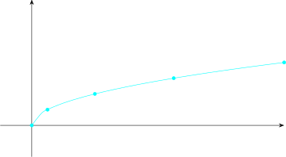
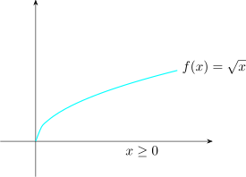
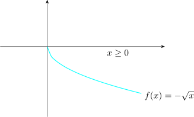
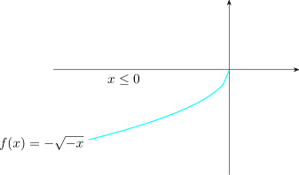
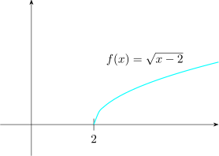
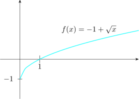
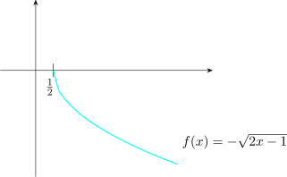
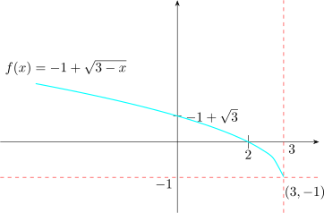
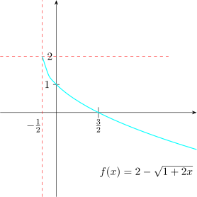

9 Functions of the Form \(f(x)=\sqrt {x}\)
We have already seen that the function \(f(x)=\sqrt {x}\) is defined only for values of \(x\geq 0\). Only non-negative values will
appear for \(x\).
| \(x\) | 0 | 1 | 4 | 9 | 16 | |||||
| \(f(x)=\sqrt {x}\) | 0 | 1 | 2 | 3 | 4 |

- 1.
- Thus all the graphs of the form \(f(x)=\sqrt {x}\) have the same shape of the graph below

- 2.
- \(f(x)=-\sqrt {x}\). This is a reflection of the graph of the function \(f(x)=\sqrt {x}\) in the
\(x-\) axis.
- 3.
- \(f(x)=\sqrt {-x}\). The domain of this function is the set of all non positive real numbers \(x\leq 0\), its graph
below
- 4.
- \(f(x)=-\sqrt {-x}\). This function is a reflection of \(f(x)=\sqrt {-x}\) in the \(x-\) axis.

Consider now the graph of \(f(x)=\sqrt {x-2}\). To find the domain of \(f\) we must solve
\[x-2\geq 0 \implies x\geq 2 ,\]
so \(D_f=[2,\infty )\).
The range of \(f\) is all the non-negative real numbers.
The graph of \(f(x)=\sqrt {x-2}\) has the same shape as the graph of \(f(x)=\sqrt {x}\). Except that the graph will start at
\(x=2\).

Solution.
The domain \(D_f\) is \(x\geq 0\).
The range \(R_f\) is \(-1\) to \(\infty \). i.e \(R_f=[-1,\infty )\)

State the domain and the range of each of the functions below and hence sketch the graph of the function.
- 1.
- \(f(x)=-\sqrt {2x-1}\)
Domain:
\(2x-1\geq 0\implies x\geq \dfrac {1}{2}\).
\(\therefore D_f=\bigg [\dfrac {1}{2},\infty \bigg )\)
Since the sign in front of the root symbol is negative the range of \(f\) must be negative numbers.
But when \(x=\dfrac {1}{2}, y=0\).
Therefore the starting point is \(\bigg (\dfrac {1}{2},0\bigg ).\)
- 2.
- \(g(x)=-1+\sqrt {3-x}\)
Domain of \(g\): \(3-x\geq 0\implies 3\geq x\)
\(D_g=(-\infty ,3]\)
Most of the values in the range will be positive.
However, when \(x=3, y=-1\)
The graph starts at \((3,-1)\).
We note that the graph will cross both \(y=-1+\sqrt {3-x}\) but where it crosses the \(x-\)axis, \(y=0\) thus \(0=-1+\sqrt {3-x}\implies 1=\sqrt {3-x}\implies 3-x=1\implies x=2\).
It crosses the \(x-\)axis at \((2,0)\) and it crosses the \(y-\)axis when \(x=0, f(0)=-1+\sqrt {3}\).
It crosses the \(y-\)axis at \((0,-1+\sqrt {3})\)
- 3.
- \(P(x)=2-\sqrt {1+2x}\)
\(D_f=\bigg [-\dfrac {1}{2},\infty \bigg )\)
starts at \(\bigg (-\dfrac {1}{2},2\bigg )\)
\(x-\)intercept, \(y=0\)
\(0=2-\sqrt {1+2x}\implies 1+2x=4\implies 2x=4-1\implies 2x=3\implies x=\dfrac {3}{2}\)
crosses the \(x-\)axis at \(\bigg (\dfrac {3}{2},0\bigg )\)
\(y-\)intercept \(x=0\)
\(P(0)=2-\sqrt {1+0}=2-1=1\)
crosses \(y-\)axis at \((0,1)\).

- 4.
- \(h(x)=3\sqrt {3x+2}+2\)
Questions on this section
Stuck on something here? Ask below and it stays attached to this topic.